Hệ thống 40 ảnh chụp chiến thuật thực địa từ trên cao • Ấn bản tiếng Việt hoàn chỉnh • Tennis Unified 2026
Lời Cảm Ơn
Chúng tôi xin gửi lời cảm ơn chân thành và sâu sắc nhất tới Jim Demas, Bob Cherry, Danny Krebs, John Williamson, Lynn Blumberg và Dan Ozier vì đã trực tiếp tham gia đóng vai các đấu sĩ (Player A, B, C, D) trong hàng loạt buổi chụp ảnh chiến thuật thực nghiệm từ trên cao trên sân quần vợt.
Sự kiên nhẫn, lòng nhiệt tình và những pha phối hợp bóng chuẩn xác đến từng centimet của các bạn dưới cái nắng gay gắt đã tạo nên linh hồn cho hệ thống sơ đồ hình ảnh thực tế độc nhất vô nhị trong cuốn sách này.
— Cynthia & Peter Doerner
Lời Giới Thiệu: Khái Niệm Tam Giác Ma Thuật
Quần vợt đánh đôi, dù từng bị xem như 'đứa con riêng' đứng nép sau hào quang của đánh đơn, lại là một môn thể thao đồng đội đầy mê hoặc, có khả năng kích hoạt những phản ứng cảm xúc cuồng nhiệt nhất nơi khán giả. Năng lượng bùng nổ, những pha đôi công cận chiến tóe lửa tại lưới và tốc độ phản xạ đến nghẹt thở tạo nên một bầu không khí rực điện lôi cuốn người xem nhập cuộc vào từng đường bóng.
Khi diện tích sân bãi ngày càng trở nên khan hiếm và ngày càng có nhiều tay vợt lẫn người hâm mộ học được cách thưởng thức vẻ đẹp tinh tế của đánh đôi — sự uyển chuyển của từng bước chạy nhịp nhàng, những kỹ năng đón chặn chuyên biệt và sự đồng điệu tuyệt đối trong suy nghĩ lẫn hành động giữa hai cá nhân — vai trò của đánh đôi sẽ ngày càng tỏa sáng trên bản đồ quần vợt toàn cầu.
Cuốn sách này được thiết kế dành riêng cho những tay vợt đã nắm vững các kỹ thuật cơ bản của quần vợt và khao khát nâng tầm tư duy chiến thuật đánh đôi lên mức chuyên nghiệp. Đồng thời, đây cũng là cẩm nang giảng dạy thiết yếu cho các huấn luyện viên và giáo viên thể chất ở mọi cấp độ đào tạo.
Ý đồ của chúng tôi là mang đến cho bạn một hệ thống lý luận hoàn chỉnh nhất: Không chỉ dạy bạn PHẢI ĐÁNH BÓNG ĐI ĐÂU VÀ KHI NÀO, mà quan trọng hơn cả là TẠI SAO BẠN PHẢI ĐÁNH VÀO ĐÓ! Mọi tay vợt nhà nghề đỉnh cao đều biết rõ lý do tại sao họ nhắm bóng vào vị trí đó và biết chính xác điều gì sẽ xảy ra tiếp theo sau khi bóng rời mặt vợt. Ở đâu (Where), Khi nào (When) và Tại sao (Why) chính là trái tim và khối óc của cuốn sách này.
1. Tam Giác Ma Thuật (The Magic Triangle)
Xuyên suốt cuốn sách này, bạn sẽ liên tục được thử thách vận dụng một khái niệm tối thượng mang tên 'Tam Giác Ma Thuật'. Chúng tôi gọi nó là ma thuật, nhưng trên thực tế, đó là một nguyên lý hình học bắt rễ sâu xa từ bản chất của mọi trò chơi dùng bóng trên mặt phẳng hình chữ nhật. Một sự thấu hiểu tường tận về các góc độ là điều kiện tiên quyết để tạo nên một cặp đôi chiến thắng.
Trong đánh đôi, tư duy cốt lõi là luôn định vị bản thân và đồng đội trên sân như hai điểm đáy của một hình tam giác, với quả bóng đóng vai trò là đỉnh thứ ba. Dù bạn đang ở thế tấn công hay phòng thủ, việc liên tục duy trì cấu trúc tam giác sẽ tự động đưa đội của bạn vào vị trí bao quát sân hoàn hảo nhất.
Khi quả bóng bay sang góc trái của đối thủ, đáy tam giác của bạn phải trượt đồng bộ sang trái. Khi bóng bay sang góc phải, đáy tam giác lập tức trượt sang phải. Hai đồng đội phải di chuyển gắn kết như thể được nối với nhau bằng một thanh xà vô hình dài khoảng 3 mét. Hãy nghiền ngẫm kỹ lưỡng từng sơ đồ và lời giải thích trong cuốn sách. Bạn sẽ nhận ra sức mạnh ma thuật thực sự của Tam Giác khi bước ra sân thi đấu thực tế!
Chương 1: Người Giao Bóng (The Server)
Trò chơi đánh đôi diễn ra trên một mặt sân đơn được mở rộng thêm hai dải hành lang dài 4,5 feet ở mỗi bên. Khoảng không gian cộng thêm này mang lại cho các tay vợt cơ hội tuyệt vời để triển khai những pha phối hợp chiến thuật phức tạp và mãn nhãn. Để giành chiến thắng trong đánh đôi, bạn bắt buộc phải thấu hiểu trọn vẹn từng vai trò chuyên biệt trên sân. Và mắt xích khởi đầu cho mọi cuộc tấn công chính là Người Giao Bóng (The Server — Player A).
1. Vị Trí Xuất Phát Tiêu Chuẩn và Triết Lý Giao Bóng
Trước khi bắt đầu một điểm số, cả bốn đấu sĩ trên sân phải ổn định tại những vị trí tối ưu về mặt hình học (xem Hình 18):
- Người giao bóng (Player A): Đứng ở vạch cuối sân bên ô phải, cách điểm trung tâm (center mark) khoảng 2 đến 3 feet để có góc giao thuận lợi nhất.
- Người đứng lưới bên giao (Player B): Đứng án ngữ tại ô sân bên trái, cách mép lưới khoảng 2 mét và cách đường biên dọc khoảng 1,5 mét.
- Người nhận bóng (Player C): Chuẩn bị đón bóng tại góc sân cuối ô chéo cánh.
- Người đứng lưới bên nhận (Player D): Đứng lơ lửng tại khu vực giữa ô giao bóng bên phải để quan sát và bảo vệ phần sân của mình.
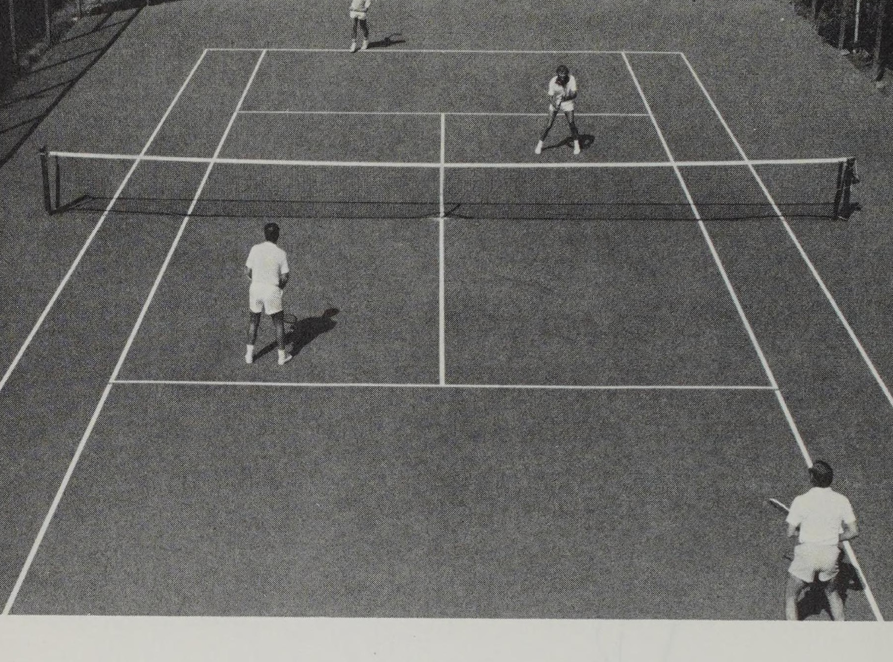
Cả bốn tay vợt ở vị trí chuẩn mực: Người giao bóng A đứng sau vạch cuối sân bên ô phải; Người đứng lưới bên giao B án ngữ trên lưới bên trái; Người nhận C chuẩn bị đón bóng ở cuối sân chéo cánh; Người đứng lưới bên nhận D đứng quan sát tại lưới bên phải. Người chơi A giao bóng sâu và hiểm vào điểm yếu trái tay của C.
Quy Tắc Vàng: Bớt 1/4 Tốc Độ Để Lấy Điểm Rơi và Thời Gian
Nếu bạn sở hữu một cú giao bóng phẳng sấm sét với tốc độ 160 km/h, xin hãy giữ lại thứ vũ khí đó cho những trận đánh đơn! Trong đánh đôi, cú giao bóng quá nhanh sẽ là một thảm họa cho chính bạn: quả bóng bay sang sân đối phương quá nhanh khiến bạn không có đủ thời gian để chạy lên lưới thiết lập thế trận cùng đồng đội. Bạn sẽ bị đối thủ trả bóng vào ngay mũi giày khi đang chạy lỡ dở ở giữa sân.
Hãy giảm bớt khoảng 25% tốc độ của cú giao bóng một. Thay vào đó, hãy tập trung 100% tâm trí vào độ xoáy (xoáy cắt slice hoặc xoáy cầu topspin/twist) và hướng bóng đi sâu cắm thẳng vào điểm yếu trái tay (backhand) của người nhận C trong 80% đến 90% số lần giao bóng!
2. Chuỗi Chiến Thuật Mẫu 1: Giao Bóng Trái Tay — Volley Trung Lộ
Hãy theo dõi chuỗi tình huống kinh điển từ Hình 18 đến Hình 21:
Sau khi Player A giao bóng sâu vào góc trái tay của C, C buộc phải vung vợt với tư thế với và trả bóng chéo sân ra ngoài tầm can thiệp của người đứng lưới B (xem Hình 20). A chủ động di chuyển theo đường bóng lao nhanh lên lưới, đón quả bóng ở tầm ngang vai.

Người chơi A giao bóng vào phía trái tay của C. C tung cú trả bóng chéo sân vượt khỏi tầm với của người đứng lưới B. Người chơi A di chuyển thanh thoát theo bóng lên lưới, chuẩn bị thực hiện quả volley thuận tay tầm ngang vai.
Tại Hình 21, Player A không ngần ngại tung quả volley thuận tay đè bóng cắm thẳng vào trung lộ giữa C và D. Cả C lẫn D đều bị kẹt cứng ở thế bị động. Quả bóng chạm đất ghi điểm winner trực tiếp. Cùng lúc đó, B áp sát mép lưới, cùng A tạo nên hai điểm đáy của Tam Giác Ma Thuật song song vững chãi.
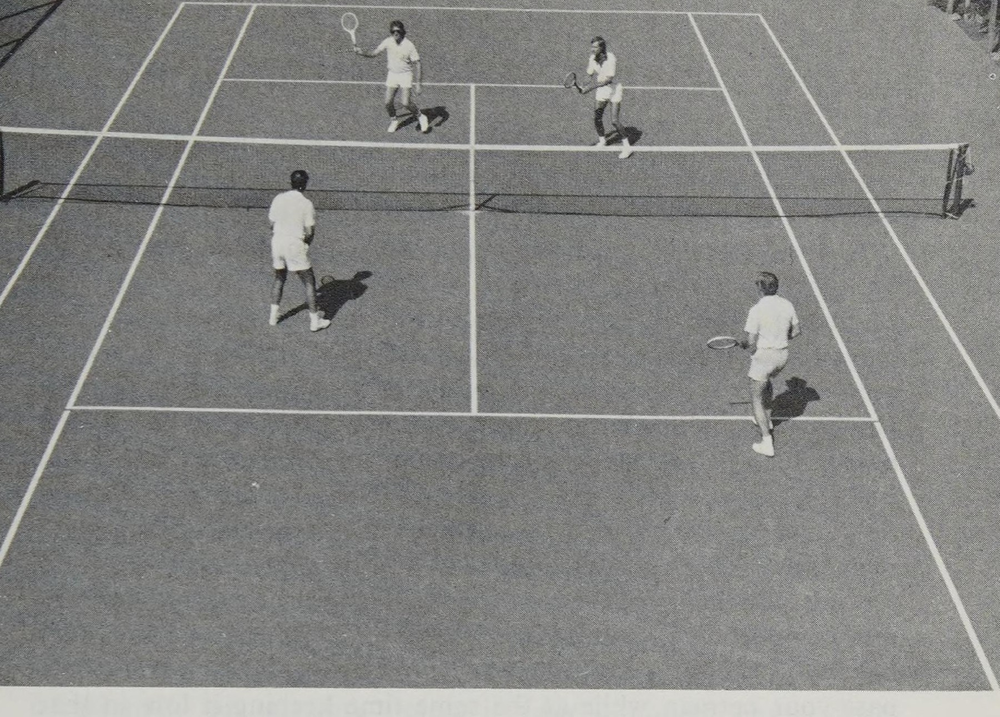
Người chơi A ập vào đón quả trả bóng và tung cú volley dứt khoát xé thẳng vào trung lộ giữa hai đối thủ ghi điểm trực tiếp. B tiến sát lưới khép góc. C và D rơi vào thế bẫy. A và B hoàn tất thế trận 'Tam giác ma thuật' (The Magic Triangle).
3. Chuỗi Chiến Thuật Mẫu 2: Tấn Công Volley Chéo Sân Trước Mặt Đối Thủ
Trong Hình 24, Player A di chuyển vào vị trí hoàn hảo để chuẩn bị cho quả volley tiếp theo. Nhận thấy quả trả bóng của C bay hơi bồng bềnh, A lập tức chủ động tăng tốc bước chân, chặn cắt quả bóng ở tầm cao ngay trước khi nó kịp chìm xuống (xem Hình 25).

Người chơi A di chuyển vào vị trí hoàn hảo trên đường tiến lên lưới để đón quả trả bóng. B và D đồng thời điều chỉnh bước chân tương ứng với quỹ đạo bay của quả bóng.
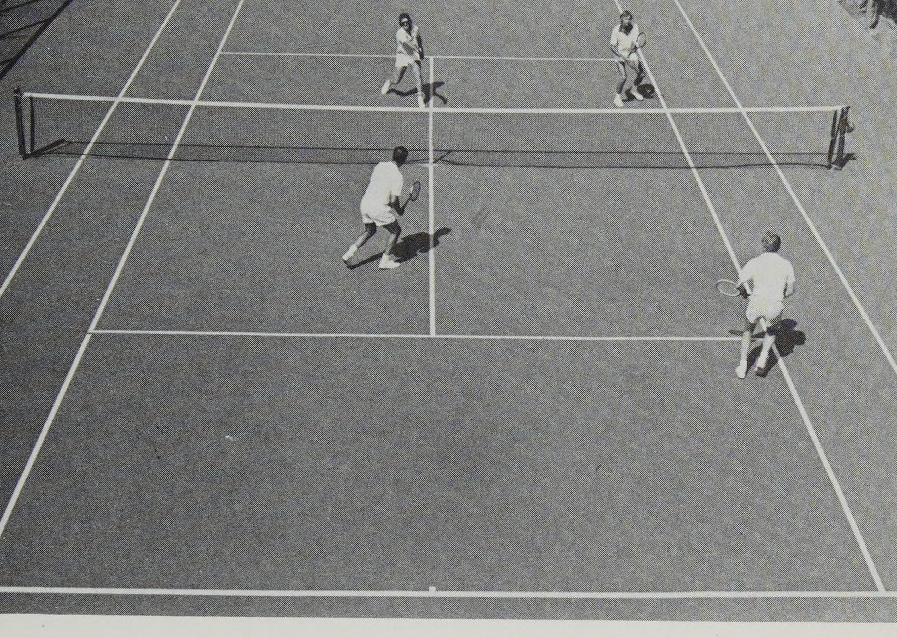
Người chơi A chủ động tấn công, đón cắt quả bóng trước khi bóng kịp chìm xuống và tung cú volley chéo sân hiểm hóc ngay trước mặt D. A và B cùng kết thúc pha bóng sát cánh bên nhau tại lưới.
Cú volley chéo sân sắc bén cắt ngang mặt người đứng lưới đối phương D, không cho đối thủ bất kỳ cơ hội phản ứng nào. A và B hoàn tất pha bóng sát cánh bên nhau tại lưới.
4. Chuỗi Chiến Thuật Mẫu 3: Xử Lý Bóng Chìm và Bắn Dọc Hành Lang (Down The Alley)
Khi người nhận C tung ra một cú trả bóng chìm sát mép lưới, Player A không được phép hoảng hốt vung mạnh. Hãy hạ thấp gối, cúi mình xúc quả volley thuận tay từ dưới tầm lưới hất thấp sang sân đối phương (xem Hình 26).

C thực hiện cú trả bóng chéo sân tốc độ trung bình đi chìm sát mép lưới. Người chơi A hạ thấp trọng tâm, khụy gối múc quả volley thuận tay từ dưới tầm lưới đi thấp sang phần sân đối phương.
Ngay pha bóng tiếp theo (xem Hình 27), nhận thấy người đứng lưới D có xu hướng lấn sang giữa sân để bắt bài, A lập tức tung cú bạt volley dọc hành lang đánh đôi (down the alley) ghi điểm winner giòn giã. D bị chôn chân tại chỗ.
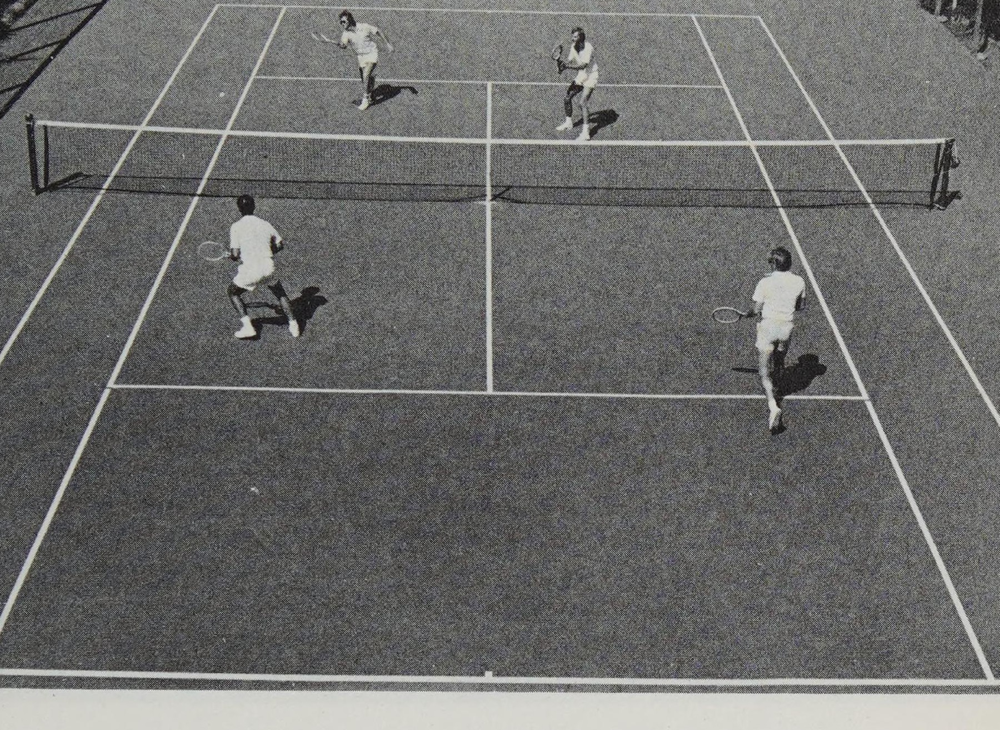
Người chơi A đón bóng và tung cú bạt volley dọc hành lang đánh đôi (Down the alley) ghi điểm winner ngoạn mục. D không kịp trở tay. A và B hoàn tất pha bóng song song bên nhau tại lưới.
5. Chuỗi Chiến Thuật Mẫu 4: Hóa Giải Cú Lốp Bóng — Smash Đập Nát Trung Lộ
Nếu đối thủ C tung một cú lốp bóng (lob) bổng qua đầu A khi A đang trên đà lao lên (xem Hình 28), sự ăn ý giữa hai đồng đội sẽ lập tức được kích hoạt. B không đứng nhìn mà chủ động lùi nhanh về sau để cùng A tái thiết lập đáy tam giác phòng ngự.
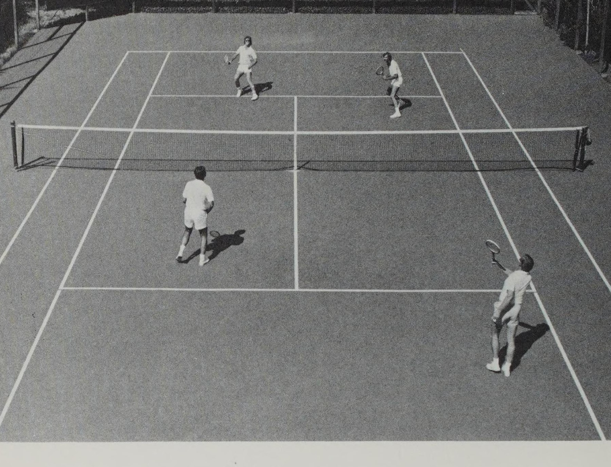
C tung cú lốp bóng bổng qua đầu A khi A đang trên đà lao lên lưới. B lập tức nhận biết tình huống và lùi sâu về sau để cùng A thiết lập lại cấu trúc phòng thủ tam giác.
Tại Hình 29, Player A bật nhảy dũng mãnh thực hiện cú smash trên đầu (overhead smash) xé toang khoảng trống giữa C và D. Hai đối thủ bị găm chặt ở vạch giao bóng và bất lực nhìn quả bóng nảy ra ngoài tầm với.

Người chơi A bật nhảy thực hiện cú smash đập bóng trên đầu uy lực trong khi B lùi lại tạo thành đáy của tam giác phòng ngự. C và D bị kẹt cứng ở vạch giao bóng khi quả bóng cắm thẳng vào khoảng trống giữa họ.
6. Chuỗi Chiến Thuật Mẫu 5 & 6: Trừng Phạt Quả Trả Trung Lộ và Cú Bỏ Nhỏ Tinh Tế
Trong Hình 32 & 33, khi C trả bóng vào giữa sân, A nhanh chóng điều chỉnh sải chân, vung quả volley trái tay găm thẳng vào góc chân của D, kết liễu pha bóng với tư thế áp đảo tuyệt đối.
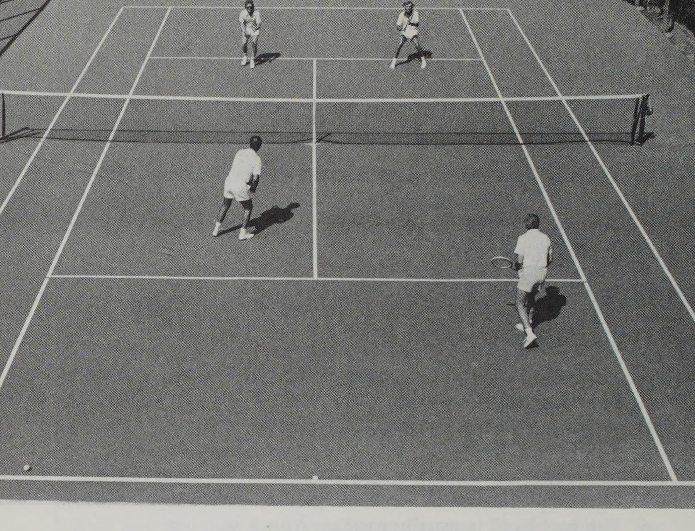
C trả quả giao bóng thẳng vào trung tâm sân. Người chơi A nhanh chóng chỉnh hướng di chuyển đón bóng. B dạt sang giữa sân trong khi D di chuyển hỗ trợ đồng đội.

Người chơi A ập vào chớp nhoáng, tung cú volley trái tay uy lực đè bóng vào giữa sân ngay trước mặt D, kết thúc điểm số với A và B đứng song song ở vị trí áp đảo nhất trên lưới.
Đặc biệt, trong Hình 34 & 35, khi nhận thấy C và D cùng lùi sâu hoặc chạy theo đà bóng chéo sân, Player A đã trình diễn một tuyệt kỹ đỉnh cao: cú bỏ nhỏ drop-volley mềm mại vào góc hành lang đánh đôi. Quả bóng rơi khẽ khàng sát mép lưới, chấm dứt hoàn toàn hy vọng cứu bóng của đối thủ.
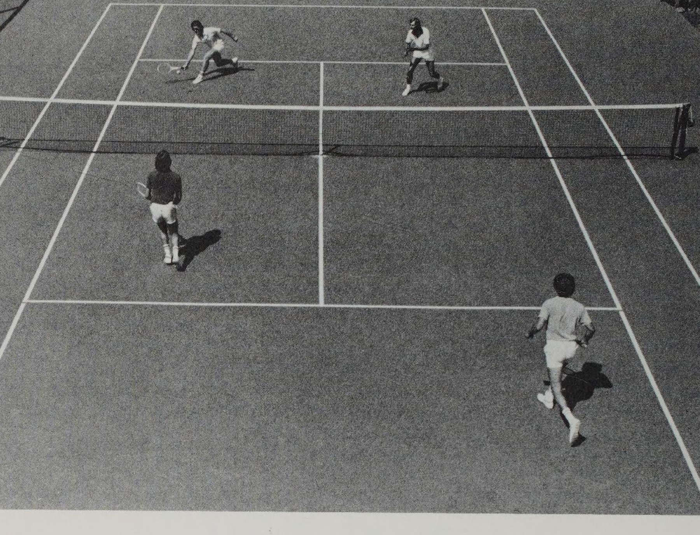
C tung cú trả bóng chéo sân tốc độ vừa phải và chủ động chạy theo đường bóng để tiến lên chiếm lưới. Người chơi A hạ thấp người chuẩn bị cho pha xử lý bóng tinh tế.
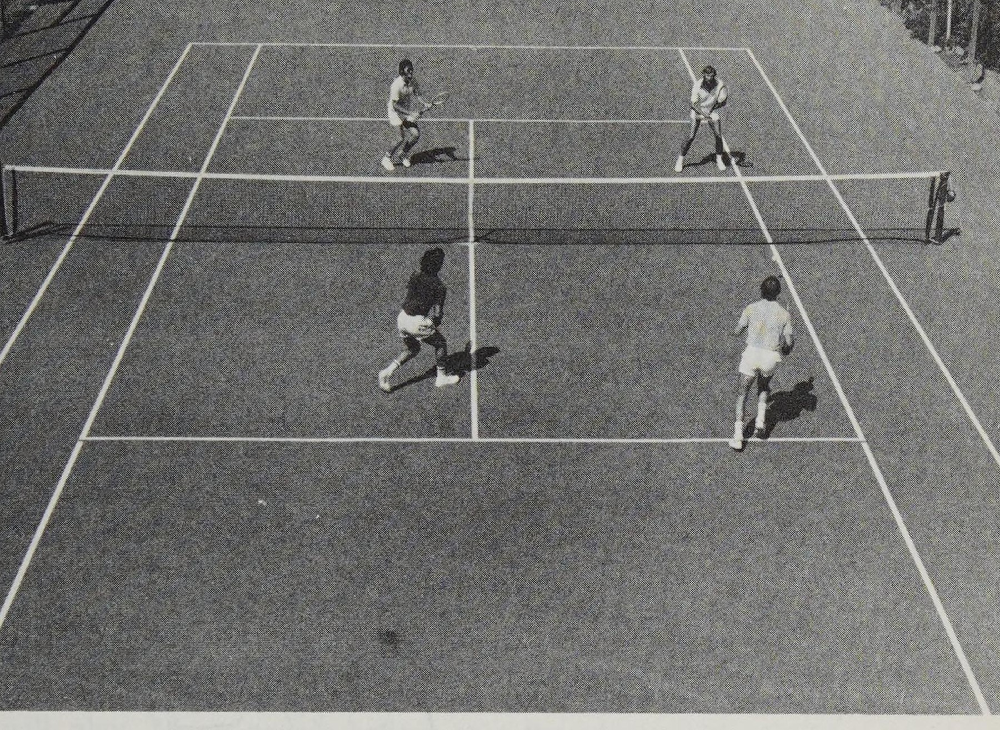
Người chơi A thực hiện một cú bỏ nhỏ drop-volley mềm mại đưa bóng rơi nhẹ vào góc hành lang chéo sân. B di chuyển bao quát phần sân trung tâm, hoàn tất cấu trúc tấn công hoàn hảo.
7. Bảo Vệ Người Đồng Đội Trên Lưới: Đừng Biến Bạn Mình Thành Tấm Bia!
Lời khuyên sâu sắc nhất dành cho người giao bóng: Hãy luôn giữ cho người đồng đội đứng lưới của bạn 'sống sót và khỏe mạnh'! Nếu bạn giao một quả bóng một phẳng quá cẩu thả bay vào tầm thuận tay sở trường của đối thủ, đối thủ sẽ tung một cú bạt bóng sấm sét nhắm thẳng vào mặt đồng đội B của bạn. Đừng bao giờ đẩy bạn mình vào hiểm cảnh. Hãy giao bóng có độ xoáy, sâu và cắm vào điểm yếu đối phương để đồng đội của bạn có thể thoải mái săn bàn trên lưới!
Chương 2: Người Đứng Lưới Tấn Công (The Offensive Netman)
Nếu người giao bóng (Player A) là người khởi xướng đòn tấn công thì Người Đứng Lưới Tấn Công (The Offensive Netman — Player B) chính là 'tay súng bắn tỉa' chịu trách nhiệm kết liễu điểm số. Khi đứng trên lưới cùng người giao bóng, bạn đang nắm giữ lợi thế chiến thuật to lớn nhất trong môn quần vợt. Nhiệm vụ của bạn không phải là đứng yên thụ động như một pho tượng để bảo vệ góc sân của mình, mà là một kẻ đi săn đích thực: rình rập, gây sức ép tâm lý nghẹt thở lên người nhận bóng và chớp thời cơ băng cắt bắt bài (poach) kết liễu pha bóng.
1. Vị Trí Đứng Chuẩn Mực và Tư Thế Sẵn Sàng
Vị trí lý tưởng của Player B khi người đồng đội A chuẩn bị giao bóng là cách mép lưới khoảng 2 mét và nằm chính giữa đường giao bóng trung tâm với đường biên dọc. Từ cự ly này, bạn chỉ cách lưới một bước chân cộng với tầm với của cây vợt — vừa đủ gần để đè bẹp mọi quả bóng trên mép lưới, vừa đủ sâu để không bị đối thủ lốp bóng qua đầu một cách dễ dàng.
Hãy duy trì tư thế chùng gối, nhón gót chân, giữ đầu vợt luôn hướng lên cao ngang ngực. Đừng bao giờ hạ thấp đầu vợt xuống hông. Tại lưới, thời gian để bạn nâng một cây vợt từ dưới hông lên đỡ bóng thường dài gấp ba lần thời gian bóng bay tới!
2. Chuỗi Chiến Thuật Mẫu 7: Cướp Quả Trả Trung Lộ — Bẻ Góc Vào Hành Lang
Hãy quan sát tình huống thực tế trong Hình 42 & 43: Khi đối thủ C cố gắng tránh né tầm vợt của A bằng cách đè bóng vào giữa sân, Player B đã nhanh nhạy đọc được ý đồ từ bước vung vợt của C. B lập tức bước xốc vào trung tâm sân đón đầu quả bóng.
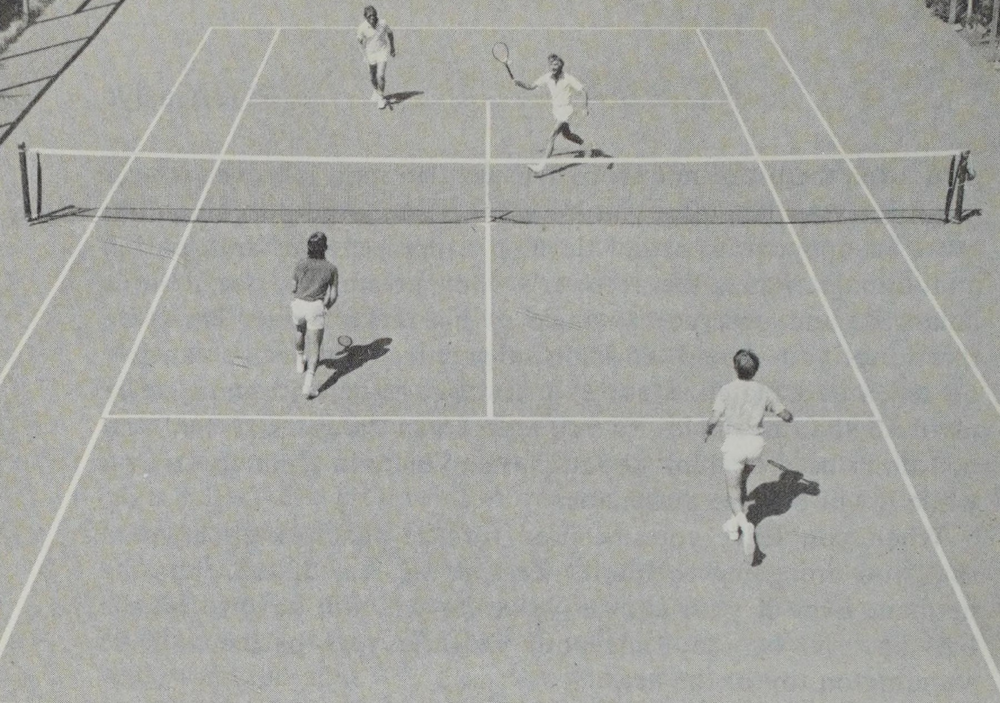
C cố gắng trả quả giao bóng vào giữa sân, nhưng người đứng lưới bên giao B đã đọc bài từ trước, bước nhanh vào trung lộ đón đầu quả bóng.
Tại Hình 43, thay vì đẩy bóng đơn giản về cuối sân, B tung một cú volley cổ tay sắc lẹm, bẻ gập góc đánh găm thẳng quả bóng vào góc hành lang đánh đôi bên kia lưới. Quả bóng đi ra xa khỏi tầm với của cả hai đối thủ. Cú dứt điểm mẫu mực này cho thấy uy lực của sự chủ động tại lưới.
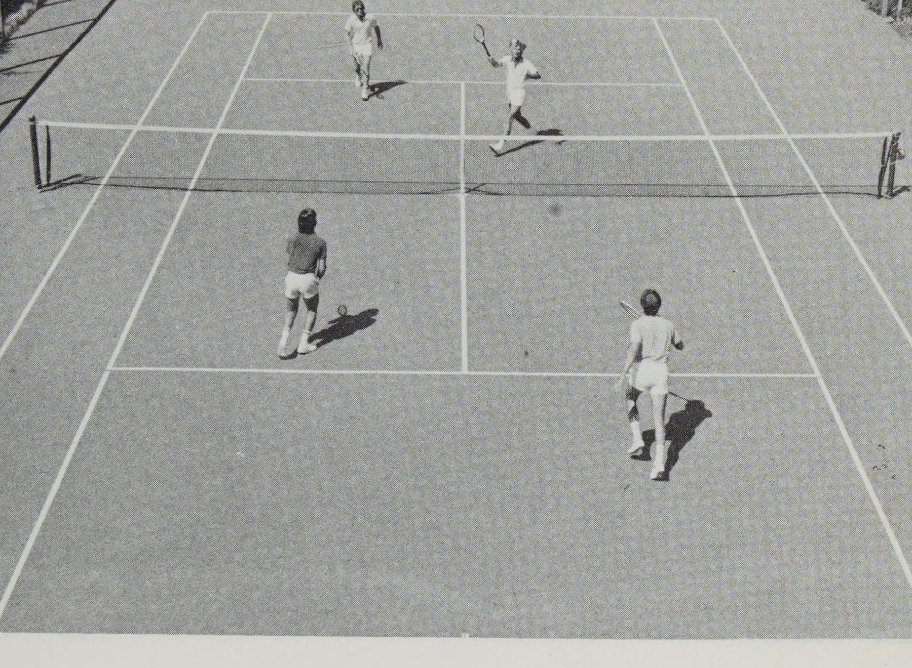
B thực hiện cú đè volley góc sắc bén găm thẳng quả bóng vào góc hành lang đánh đôi ghi điểm trực tiếp. Người chơi A sẵn sàng tiếp ứng phía sau, khép lại pha phối hợp mẫu mực.
3. Chuỗi Chiến Thuật Mẫu 8: Trừng Phạt Quả Trả Bồng Bềnh và Xử Lý Cú Lốp
Trong Hình 44, người nhận C trả quả giao bóng đi hơi cao và trôi vào giữa sân — đây là 'món quà trời cho' mà bất kỳ tay lưới cừ khôi nào cũng mong đợi. B lập tức bước lên chuẩn bị kết liễu.

C trả bóng thiếu lực vào giữa sân đúng nơi B đang chực chờ sẵn. B bước xốc vào trung tâm đè bóng từ trên cao xuống.
Tuy nhiên, nếu đối thủ tinh quái tung cú lốp bóng (lob) qua đầu B (xem Hình 46), B không bao giờ được quay lưng chạy hoảng loạn. Hãy giương cao vợt, bước lùi có kiểm soát bằng các bước trượt ngang (side-steps) hoặc bước lùi chéo chân (crossover steps) để luôn giữ mắt khóa chặt vào quả bóng trên không.

Người đứng lưới B lùi nhanh về sau để đón quả lốp bóng trong khi C và D cùng tràn lên lưới. A hãm đà tiến và chuyển sang tư thế hỗ trợ đồng đội.
Tại Hình 47, khi quả bóng đạt điểm rơi hoàn hảo, B bật nhảy dũng mãnh và tung cú smash overhead sấm sét cắm thẳng vào khe hở giữa C và D. Đòn đánh uy lực này xé toang hàng phòng ngự đối phương, mang về điểm winner thuyết phục.
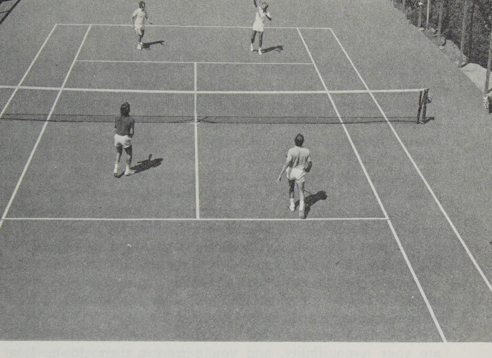
B tung cú smash đập bóng uy lực cắm thẳng vào khe hở giữa C và D ghi điểm winner. A và B cùng di chuyển tiếp cận lưới theo sau cú đập bóng.
4. Chuỗi Chiến Thuật Mẫu 9: Cú Bỏ Nhỏ Chạm Lưới Đầy Tinh Tế
Đôi khi, sự tàn nhẫn nhất trong quần vợt lại được thể hiện qua một cú chạm bóng êm ái như nhung. Trong Hình 50 & 51, nhận thấy cả C và D đều đang lùi sâu chuẩn bị đỡ một cú smash uy lực của B, B đã bất ngờ thay đổi quyết định vào tích tắc cuối cùng:

C trả quả giao bóng quá cao vào giữa sân ngay trước mũi vợt của B. B không bỏ lỡ cơ hội, bước tới đập dập đường bóng.
B chỉ hãm nhẹ mặt vợt, đón quả bóng rơi và thả một cú drop-volley mềm mại bay khẽ qua mép lưới rơi gọn ghẽ vào góc hành lang đánh đôi (xem Hình 51). Cả hai đối thủ đều chôn chân đứng nhìn trong sự bất lực hoàn toàn.
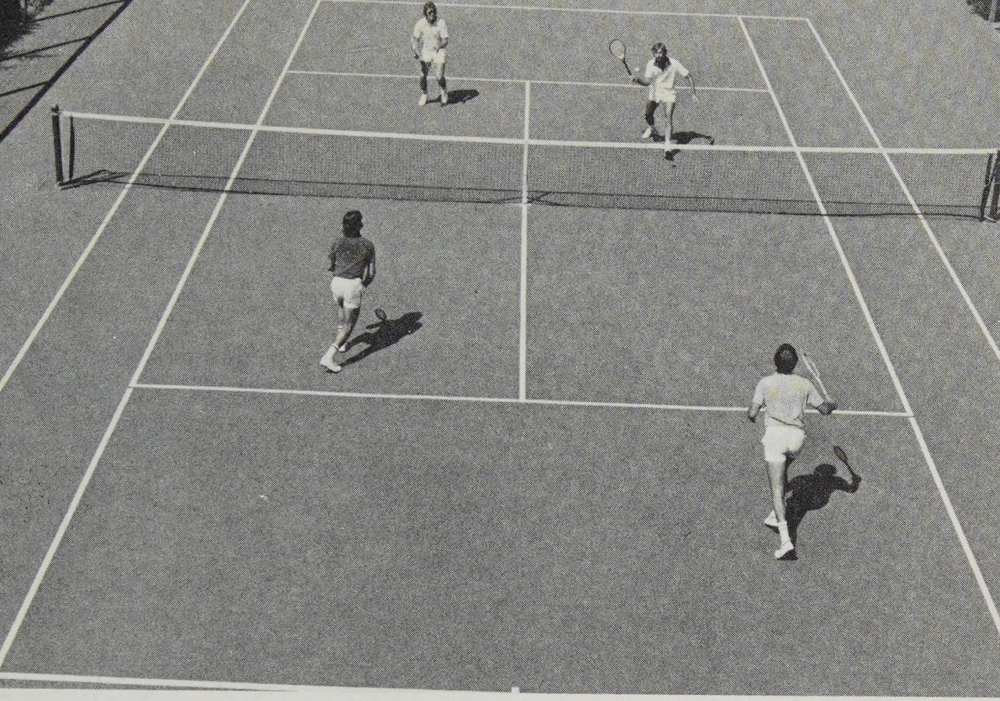
B hãm lực nhẹ nhàng thả quả bóng rơi ngay sau mép lưới vào góc hành lang đánh đôi, khiến cả C lẫn D đều hoàn toàn bất lực.
5. Các Nguyên Tắc Bất Di Bất Dịch Cho Người Đứng Lưới Tấn Công
- Bắt bài (Poach) ở mọi thời điểm thuận lợi: Hãy nhớ rằng việc bạn thường xuyên di chuyển bắt bài sẽ gieo rắc sự sợ hãi tột độ vào tâm trí người nhận bóng. Ngay cả khi bạn bắt bài hỏng một vài quả, áp lực vô hình bạn tạo ra sẽ ép đối thủ phải cố gượng ép đánh bóng sát dây và tự mắc lỗi đánh hỏng.
- Khóa chặt khu vực trung tâm: Hơn 80% các pha bóng giằng co trong đánh đôi đi qua vùng trung tâm sân. Người đứng lưới phải luôn có ý thức 'lấn sân' (crowd the middle) để che chắn khoảng trống giữa hai đồng đội.
- Luôn ngẩng cao đầu và theo dõi bóng: Tuyệt đối không bao giờ quay đầu lại nhìn đồng đội giao bóng. Hãy tin tưởng đồng đội và tập trung 100% thị giác vào mặt vợt của người nhận bóng đối diện!
Chương 3: Đón Trả Giao Bóng (Receiving Serve)
Cú trả giao bóng là phát súng mở màn thiết lập cục diện cho toàn bộ loạt đánh giằng co. Trong đánh đôi, đội giao bóng nắm giữ thế chủ động ban đầu, nhưng chính Người Đón Trả Giao Bóng (The Receiver — Player C) mới là người có quyền định đoạt xem lợi thế đó sẽ được duy trì hay bị bẻ gãy ngay từ phát chạm bóng đầu tiên. Một cú trả giao bóng xuất sắc sẽ ngay lập tức tước đoạt thế công của đối thủ và đưa đội nhận bóng vươn lên làm chủ cuộc chơi.
1. Bốn Phương Án Trả Giao Bóng Chiến Lược
Trước mỗi quả giao bóng của đối thủ, bạn có 4 phương án trả bóng căn bản tùy thuộc vào vị trí và thói quen của người giao bóng:
- Cú trả chéo sân tốc độ trung bình vào chân người giao: Đây là lựa chọn an toàn và hiệu quả nhất trong 80% trường hợp, buộc đối thủ phải volley từ dưới tầm lưới hất lên.
- Cú đè bóng sâu vào trung lộ: Khoét sâu vào khoảng trống giữa hai đối thủ, hạn chế tối đa góc đánh phản công của họ.
- Cú bạt bóng dọc hành lang (Down the alley): Đòn trừng phạt thích đáng khi người đứng lưới bên giao di chuyển quá đà sang giữa sân để bắt bài.
- Cú lốp bóng bổng qua đầu người đứng lưới: Giải pháp hoàn hảo khi đối phương ập sát lưới quá đà, buộc họ phải quay lưng tháo chạy về cuối sân.
2. Chuỗi Chiến Thuật Mẫu 10: Ép Người Giao Volley Dưới Lưới — Phản Công Drive-Volley
Trong Hình 56, người nhận C thực hiện một cú trả bóng chìm cực kỳ hiểm hóc. Người giao bóng A dù vươn người đón bóng ở phía trước nhưng buộc phải thực hiện quả volley khó khăn từ dưới tầm mép lưới hất lên.
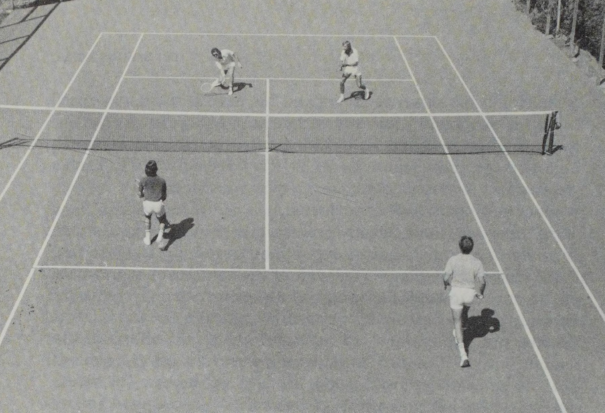
Người nhận bóng C tung cú trả bóng hiểm hóc buộc người giao A phải thực hiện quả volley khó khăn từ dưới tầm mép lưới hất lên.
Ngay khi quả bóng bồng bềnh bay qua lưới (xem Hình 57), C không hề chần chừ: anh lao nhanh vào sân tung cú drive-volley thuận tay sấm sét cắm thẳng vào trung lộ. Cùng lúc đó, người đồng đội đứng lưới D tiến sát lưới khép góc, hoàn tất Tam Giác Ma Thuật tấn công bóp nghẹt đối phương.

C chớp thời cơ bóng bồng bềnh tung cú drive-volley thuận tay sấm sét xuyên thẳng vào trung lộ. D tiến lên khép góc hoàn thành tam giác tấn công.
3. Chuỗi Chiến Thuật Mẫu 11: Đánh Lừa Hướng Di Chuyển Của Đối Thủ
Tại Hình 58, người giao A bị ép phải hất quả bóng bổng từ tận vạch giao bóng sang sân đối phương. Nhận thấy A đang nỗ lực dạt sang giữa sân để bao quát trung lộ, C đã có một pha xử lý bậc thầy (xem Hình 59):
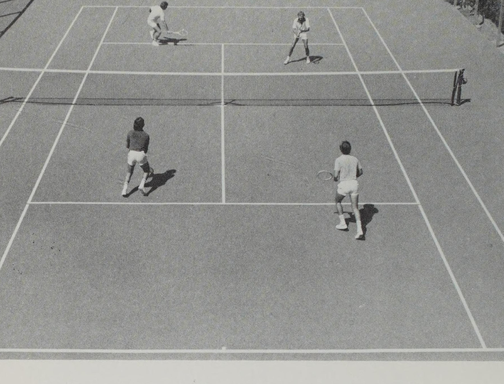
Bị ép vào thế khó, A buộc phải hất quả bóng bổng từ vạch giao bóng sang sân đối phương trong khi C và D cùng ập vào lưới giăng bẫy.
C khéo léo bẻ cổ tay, volley quả bóng ngược hướng vào khoảng trống mênh mông sau lưng A vừa bỏ lại. C và D hoàn toàn làm chủ mặt lưới và ghi điểm winner ngoạn mục.

C tinh quái volley bóng bẻ hướng ngược về khoảng trống sau lưng A khi A đang lao sang bao quát trung lộ. C và D hoàn toàn làm chủ lưới.
4. Chuỗi Chiến Thuật Mẫu 12 & 13: Cắt Bóng Tầm Cao và Bắt Bài Quả Smash
Trong Hình 62 & 63, khi A bị ép phải volley yếu ớt từ giữa sân, C lập tức bước xốc vào trong, đón quả bóng ở tầm cao ngay trước khi nó rơi xuống và bẻ góc sắc lẹm ngay trước mũi vợt của B.

Người giao A chỉ có thể đẩy quả volley từ giữa sân đi thấp và thiếu lực. C và D lập tức trừng phạt pha bóng non này để giành quyền kiểm soát.

C lao vào đón quả bóng trên tầm cao và thực hiện cú bẻ góc hiểm hóc ngay trước mặt người đứng lưới B ghi điểm winner.
Đặc biệt, trong Hình 64 & 65, sau một cú lốp bóng giải tỏa của bên nhận, khi người đứng lưới B chuẩn bị bật nhảy đập quả smash, C đã thể hiện khả năng phán đoán phi thường: anh băng cắt ngang sân đón đầu đường đập bóng và tung cú volley trái tay bẻ góc dứt điểm không thể cản phá!
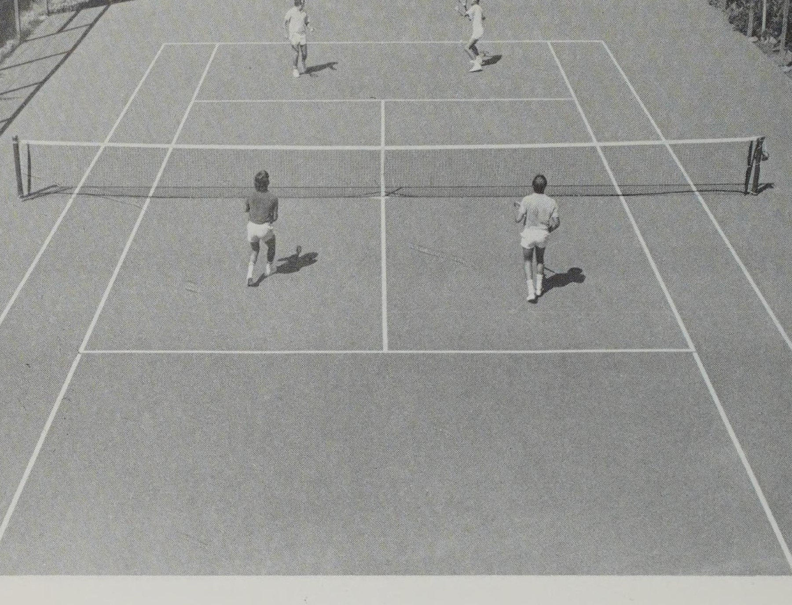
B lùi lại định vị quả lốp bóng trả giao trong khi C và D tràn lên chiếm thế trận tấn công tại lưới. A lùi về hỗ trợ.
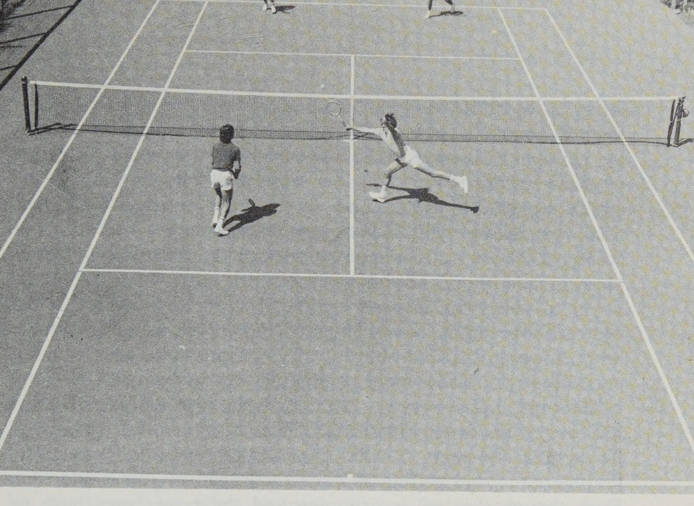
C phán đoán chính xác hướng đập smash và băng cắt ngang sân, dùng cú volley trái tay bẻ góc găm bóng thẳng vào khoảng trống ghi điểm ngoạn mục.
5. Chuỗi Chiến Thuật Mẫu 14: Đón Bóng Khi Bóng Đang Lên — Bạt Dọc Dây Sấm Sét
Một trong những đòn đánh mãn nhãn nhất của người nhận C được thể hiện trong Hình 68 & 69:
Thay vì đứng lùi sâu ra sau vạch cuối sân, C chủ động bước chân vào trong sân, đón bóng sớm ngay khi vừa nảy lên khỏi mặt đất (take the ball on the rise) (xem Hình 68). Việc đón bóng sớm tước đoạt hoàn toàn thời gian chuẩn bị của người đứng lưới B.
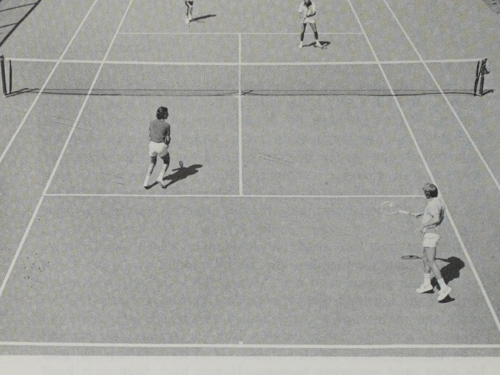
Người chơi A giao bóng đến C. C dũng cảm bước vào trong sân đón bóng sớm khi bóng đang lên (on the rise) trong khi D di chuyển thu hút sự chú ý ở trung lộ.
Tại Hình 69, dồn toàn bộ trọng lượng cơ thể đang lao tới vào cú vung vợt, C tung một cú bạt bóng dọc đường biên dọc (down the line) với tốc độ tên lửa, xuyên thủng hàng phòng ngự của đối phương trước sự ngỡ ngàng của cả sân đấu!
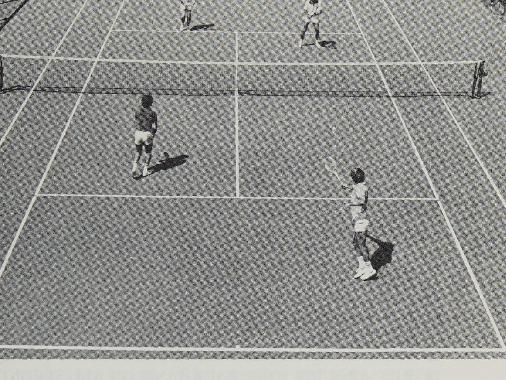
Dồn toàn bộ trọng lượng cơ thể vào cú đánh, C bạt quả bóng sấm sét dọc theo đường biên dọc qua tầm với của người đứng lưới B ghi điểm trực tiếp.
Chương 4: Người Đứng Lưới Phòng Thủ (The Defensive Netman)
Vị trí của Người Đứng Lưới Bên Nhận (The Defensive Netman — Player D) thường là vị trí bị hiểu sai và đánh giá thấp nhất trong quần vợt đánh đôi. Nhiều người chơi lầm tưởng rằng vì đối thủ đang nắm quyền giao bóng nên Player D chỉ có nhiệm vụ 'đứng ngó' hoặc phòng ngự lùi sâu. Đó là một sai lầm chết người! Trên thực tế, Player D là một 'lò xo nén' đầy hiểm họa: ở trạng thái chờ đợi, bạn quan sát và bọc lót; nhưng chỉ cần quả trả bóng của đồng đội C ép đối phương rơi vào thế bị động, bạn sẽ lập tức bung ra để trở thành kẻ săn bàn tàn nhẫn nhất trên sân.
1. Vị Trí Xuất Phát và Trách Nhiệm Quan Sát
Player D đứng ở khoảng giữa vạch giao bóng và mép lưới, chếch sang phần sân của mình. Trách nhiệm đầu tiên của bạn là hỗ trợ quan sát vạch giao bóng để hô 'Out' dứt khoát nếu quả giao bóng của A ra ngoài. Trách nhiệm thứ hai — quan trọng hơn cả — là đọc phản xạ của người giao bóng A ngay khoảnh khắc quả bóng trả của C bay qua lưới.
2. Chuỗi Chiến Thuật Mẫu 15: Trừng Phạt Quả Half-Volley Non Của Đối Phương
Trong Hình 74, cú trả giao bóng xuất sắc của C đã ép người giao A phải thực hiện quả half-volley gượng gạo ở tầm thấp, đưa quả bóng bồng bềnh qua giữa lưới.
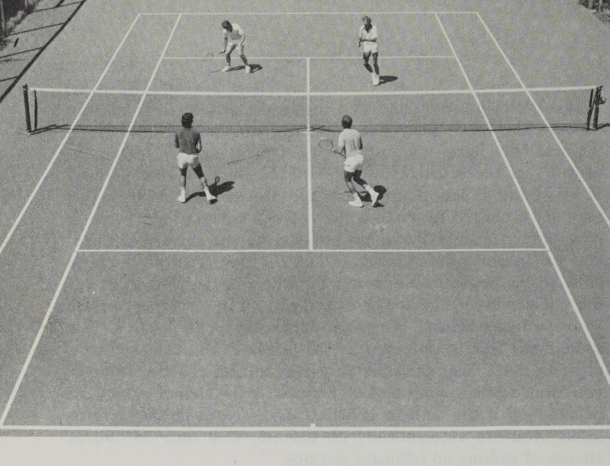
Người giao A bị ép phải thực hiện cú half-volley gượng gạo đưa quả bóng bồng bềnh qua giữa lưới — một 'món mồi ngon' cho hàng lưới đối phương.
Không bỏ lỡ một phần mười giây quý giá, tại Hình 75, Người chơi D lập tức bước xốc vào trung lộ, vung vợt đè quả volley từ trên cao cắm thẳng vào trung tâm sân ghi điểm winner dứt khoát. Cú đánh này chuyển hóa hoàn toàn thế trận từ phòng ngự sang chiến thắng áp đảo.

Người đứng lưới bên nhận D phản xạ nhanh như chớp, bước tới đập quả volley vào trung lộ ghi điểm kết liễu trong khi C bảo vệ góc sân phía sau.
3. Chuỗi Chiến Thuật Mẫu 16: Cắt Quả Volley Từ Xa Bằng Cú Bẻ Góc Chéo Sân Ngắn
Khi người giao A bị ép phải volley từ tận vạch giao bóng (xem Hình 76), đường bóng của anh ta sẽ bay chậm và có quỹ đạo vòng cung.

Người giao A buộc phải chạm bóng từ quá xa ngoài vạch giao bóng, không thể tạo được độ cắm cần thiết cho quả bóng.
Tại Hình 77, Player D băng cắt ngang quỹ đạo bay của quả bóng và thực hiện một cú volley bẻ góc chéo sân ngắn (short-angled crosscourt volley) cực kỳ sắc bén. Quả bóng cắm sát mép lưới và trôi ra ngoài biên khiến cả A lẫn B đều chỉ biết chôn chân đứng nhìn.

D bước xốc tới trước, cắt ngang quỹ đạo bóng và tung cú volley chéo sân ngắn cắm thẳng ra mang cá khiến cả A lẫn B đều chôn chân đứng nhìn.
4. Chuỗi Chiến Thuật Mẫu 17 & 18: Đóng Đinh Vào Khoảng Trống Giữa Sân và Khóa Chặt Hành Lang
Trong Hình 80 & 81, cú trả bóng của C kéo A dạt ra tít ngoài biên dọc. Nhận thấy khoảng trống chết mênh mông lộ ra ở trung tâm, D lập tức bước vào đè cú volley trái tay uy lực xuyên thẳng vào khoảng trống giữa A và B.
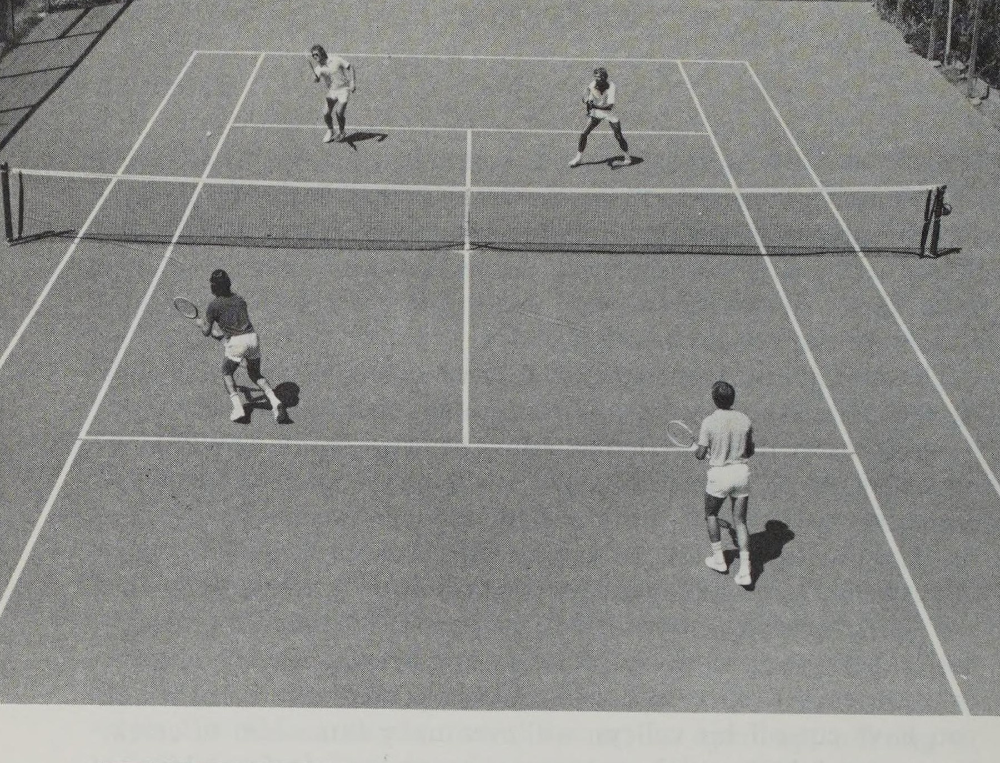
Cú trả bóng sắc sảo của C kéo người giao A dạt ra tít ngoài biên dọc. Khoảng trống trung lộ lộ ra mênh mông.

D băng vào đè cú volley trái tay uy lực xuyên thẳng vào khoảng trống giữa A và B, minh họa rõ nét bài học: ai để lộ trung lộ sẽ phải trả giá đắt.
Trong Hình 82 & 83, khi A cố gắng thử thách D bằng cách hất quả bóng bổng hướng về phía hành lang của D, D đã không hề bối rối. Anh bước ngang sang bắt bài gọn gàng và bạt quả bóng dọc theo đường biên dọc ghi điểm thuyết phục.

Người giao A cố gắng cứu bóng bằng cách hất quả bóng bổng lên cao hướng về phía hành lang của D.
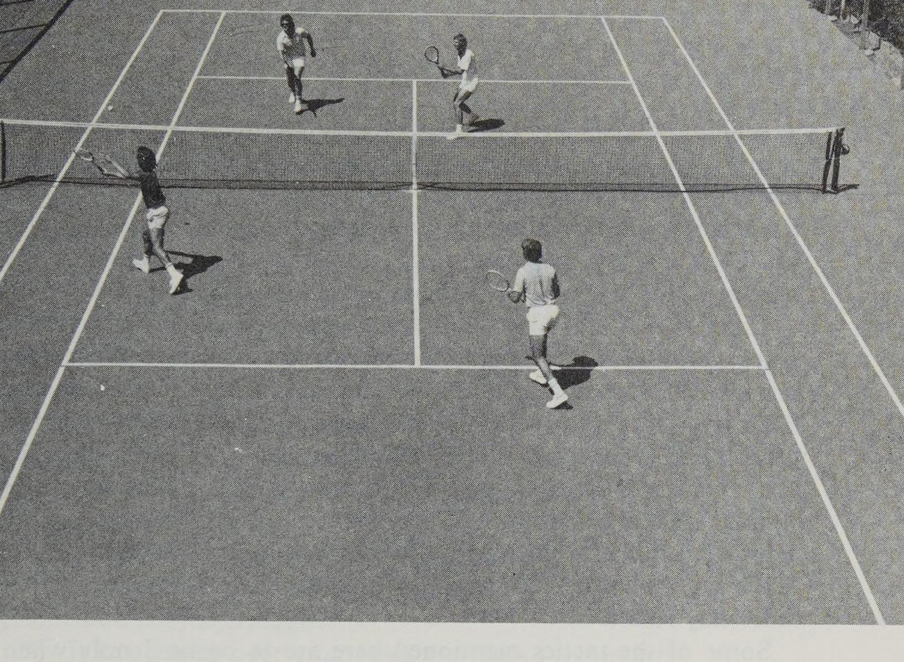
D bước ngang sang bắt bài gọn gàng và đập quả bóng dọc theo đường biên dọc ghi điểm winner thuyết phục.
5. Chuỗi Chiến Thuật Mẫu 19: Tấn Công Trực Diện Ngay Khi Bóng Vừa Qua Lưới
Khi người đứng lưới B của đối phương phải lùi sâu về sau để cứu một quả lốp bóng (xem Hình 86), hàng phòng ngự của đối thủ bị kéo giãn tối đa.

B lùi sâu về sau cứu quả lốp bóng trả giao trong khi A cũng lùi lại phối hợp. C và D chớp thời cơ tràn lên làm chủ hoàn toàn mặt lưới.
Tại Hình 87, ngay khoảnh khắc quả bóng vừa vượt qua mép lưới, Player D ập vào như một cơn lốc, tung cú volley sấm sét vào ngay trung tâm sân, ấn định chiến thắng cho một pha đôi công kinh điển.

Ngay khoảnh khắc quả bóng vừa vượt qua mép lưới, D ập vào tung cú volley sấm sét vào trung tâm sân, dứt điểm trọn vẹn pha đôi công mẫu mực.
Chương 5: Đánh Đôi Nam Nữ (Mixed Doubles)
Đánh đôi nam nữ (Mixed Doubles) là một trong những nội dung thi đấu thú vị, phức tạp và đòi hỏi tư duy chiến thuật tinh vi nhất trong thế giới quần vợt. Đây không đơn thuần là một trận đấu quần vợt thông thường, mà là một ván cờ tâm lý và hình học đỉnh cao, nơi sự chênh lệch về thể lực, tốc độ và tầm với giữa nam và nữ buộc các cặp đôi phải áp dụng những nguyên lý chiến thuật hoàn toàn đặc thù để giành chiến thắng.
1. Phân Chia Sân Đấu: Tại Sao Nam Luôn Đứng Ô Trái (Ad Court)?
Trong hơn 95% các cặp đôi nam nữ chuyên nghiệp, đấu thủ nam luôn đảm nhận ô bên trái (Odd court / Ad court), trong khi đấu thủ nữ đứng ở ô bên phải (Even court / Deuce court). Quyết định chiến lược này xuất phát từ hai nguyên nhân mang tính sống còn:
- Bao quát trung lộ và quả đập Smash: Khi đứng ở ô bên trái, tay vợt nam thuận tay phải sẽ có cú thuận tay (forehand) hướng vào trung tâm sân. Vị trí này cho phép anh ta bao quát toàn bộ khu vực giữa sân để tung ra những quả volley và đập smash trên đầu uy lực nhất.
- Gánh vác các điểm số quyết định: Tất cả các điểm số sinh tử — Game Point, Break Point, ván đấu quyết định — đều diễn ra tại ô bên trái. Đấu thủ nam với lợi thế thể lực và tốc độ giao bóng/trả bóng sẽ chịu trách nhiệm giải tỏa áp lực tâm lý cho cả đội.
2. Triết Lý Chiến Thuật Thực Chiến: 'Tiêu Điểm Duy Nhất'
Dưới góc nhìn của Cynthia Doerner (tay vợt nữ đẳng cấp thế giới) và Peter Doerner, chiến thuật đánh đôi nam nữ đỉnh cao được tóm gọn qua một nguyên tắc thực tế đến lạnh lùng:
'Cả hai chúng tôi khi bước vào sân đều có chung một tiêu điểm duy nhất: ĐÁNH VÀO TAY VỢT NỮ ĐỐI PHƯƠNG! Điều này hoàn toàn không phải vì ác ý hay thiếu tinh thần thể thao, mà là hình học chiến thuật thuần túy. Tay vợt nữ đối phương biết rõ cô ấy là mục tiêu phòng thủ, và nhiệm vụ của chúng tôi là khai thác triệt để vị trí đó.'
1. Trừng phạt quả giao bóng hai của nam: Nếu bạn là đấu thủ nữ hoặc nam đón quả giao bóng hai thiếu lực của tay vợt nam đối phương, đừng đánh bóng trả lại cho anh ta! Hãy bắn một cú bạt bóng sấm sét nhắm thẳng vào tay vợt nữ đang đứng trên lưới. Điều này tước đoạt toàn bộ thời gian phản xạ của cô ấy và mang về điểm số trực tiếp.
2. Tuyệt đối không lốp bóng qua đầu đấu thủ nam: Một quy tắc vàng bất di bất dịch: Không bao giờ lốp bóng qua đầu đấu thủ nam nếu bạn còn sự lựa chọn khác! Với tầm với cao và sức bật mạnh mẽ, tay vợt nam đối phương sẽ dễ dàng bật nhảy và tung cú smash kết liễu. Ngược lại, khi tay vợt nữ đối phương áp sát lưới quá đà, một cú lốp bóng điểm rơi qua đầu cô ấy sẽ đẩy đội bạn vào thế phòng thủ bị động hoàn toàn.
3. Đấu thủ nam phải bắt bài cướp lưới quyết liệt (Poaching): Trong đánh đôi nam nữ, người nam không được phép 'lười biếng' đứng chôn chân bên phần sân của mình. Anh ta phải liên tục di chuyển rình rập, sẵn sàng băng cắt ngang sân để đè bẹp mọi quả bóng bồng bềnh của đối phương, che chở cho người đồng đội nữ và làm chủ hoàn toàn mặt lưới.
3. Sự Tôn Trọng và Động Viên Tinh Thần
Điều tối kỵ nhất làm tan vỡ một cặp đôi nam nữ là sự nóng giận, chỉ trích hoặc coi thường đồng đội. Người nam tuyệt đối không được tỏ thái độ thất vọng khi người nữ đánh hỏng, và người nữ cần hiểu rằng sự xông xáo cướp bóng của người nam là vì mục tiêu chung của đội. Một sự thấu cảm, khích lệ chân thành sau mỗi pha bóng hỏng chính là chất keo dính kết tạo nên một đôi nam nữ bất khả chiến bại.
Chương 6: Đấu Thủ Thuận Tay Trái (Lefties)
Không có điều gì khiến một người nhận bóng bối rối và hoang mang bằng việc phải đối đầu với một cú giao bóng nhanh, xoáy của một tay vợt thuận tay trái (Lefty). Quỹ đạo bay uốn cong ngược chiều hoàn toàn so với thông thường: bóng lượn vòng từ trái sang phải và nảy giật bạt ra ngoài hàng rào bên ô chéo cánh, kéo người nhận trôi dạt ra xa khỏi sân đấu.
1. Lợi Thế Khi Đánh Cùng Một Tay Vợt Thuận Tay Trái
Khi bạn kết hợp với một đồng đội thuận tay trái (một người thuận tay phải, một người thuận tay trái), đội của bạn sẽ sở hữu một vũ khí chiến lược đáng sợ nhất trong quần vợt: Cấu hình Hai Thuận Tay Ở Giữa Sân (Two Forehands in the Middle).
Nếu tay vợt thuận tay phải đứng ở ô bên trái (Ad court) và tay vợt thuận tay trái đứng ở ô bên phải (Deuce court), cả hai cú thuận tay uy lực nhất của hai bạn sẽ cùng hướng vào trung tâm sân. Khoảng trống chết giữa sân — vốn là tử huyệt của hầu hết các cặp đôi — nay được khóa chặt bởi hai khẩu đại bác thuận tay! Bất kỳ đường bóng nào của đối thủ lọt vào trung lộ đều sẽ bị đè bẹp ngay lập tức.
2. Chiến Thuật Hóa Giải Khi Đối Đầu Với Tay Vợt Thuận Tay Trái
Khi đối đầu với một 'kèo trái', bạn phải ngay lập tức tái lập trình lại thói quen thị giác và phản xạ của mình:
- Điều chỉnh vị trí đón bóng: Bước chếch sang bên trái nhiều hơn ở ô Deuce để đề phòng quả giao bóng slice xé mang cá của họ.
- Tấn công vào cú trái tay của họ: Cú trái tay của đa số tay vợt thuận tay trái thường dễ bị khai thác hơn dưới áp lực bóng sâu và bóng cao.
- Cảnh giác với cú smash: Góc đập bóng trên đầu của người thuận tay trái có hướng bay ngược chiều, đòi hỏi bạn phải di chuyển đón bóng sớm hơn thường lệ.
Chương 7: Quần Vợt Đánh Đôi Cho Người Cao Tuổi (Seniors)
Nếu bạn là một tay vợt lớn tuổi đang muốn bắt đầu chơi quần vợt hoặc quay trở lại sân đấu sau nhiều năm bận rộn, đánh đôi chính là món quà tuyệt vời nhất dành cho bạn. Khác với đánh đơn đòi hỏi thể lực cuồn cuộn và những pha chạy nước rút bào mòn thể xác, đánh đôi là một môn thể thao của trí tuệ, sự khôn ngoan và nghệ thuật tiết kiệm năng lượng.
1. Bí Quyết Kéo Dài Tuổi Thọ Quần Vợt Của Các Bậc Cao Niên
- Dùng sự phán đoán thay cho đôi chân: Người chơi cao tuổi không cần phải chạy thục mạng khắp sân. Hãy học cách đọc hướng vung vợt của đối thủ để di chuyển sớm trước một nhịp. Một bước chân đúng hướng từ trước có giá trị hơn năm bước chạy nước rút muộn màng.
- Khai thác triệt để cú lốp bóng (Lob): Cú lốp bóng là người bạn thân thiết nhất của người cao tuổi. Khi bị đối thủ trẻ tuổi dồn ép tại lưới, một cú lốp bổng sâu về góc sân cuối sẽ giải tỏa toàn bộ áp lực và đảo ngược tình thế.
- Ưu tiên độ sâu và điểm rơi hơn là sức mạnh: Đừng cố đập bóng búa bổ. Những cú đẩy bóng mềm mại vào góc chết, những quả volley gài sát mép lưới và cú giao bóng xoáy có kiểm soát sẽ mang lại hiệu quả ăn điểm cao hơn nhiều mà không gây quá tải cho khớp vai và cột sống.
Chương 8: Quần Vợt Đánh Đôi Cho Lứa Tuổi Trẻ (Juniors)
Rất nhiều huấn luyện viên và phụ huynh thường mắc sai lầm nghiêm trọng khi chỉ cho các tay vợt trẻ tập trung vào đánh đơn mà xem nhẹ đánh đôi. Trên thực tế, đánh đôi là trường học tốt nhất để tôi luyện một tay vợt toàn diện:
- Rèn luyện phản xạ lưới thần tốc: Không có bài tập đánh đơn nào có thể mang lại tốc độ phản xạ và cảm giác chạm bóng tại lưới tinh tế bằng những loạt đôi công nghẹt thở trong đánh đôi.
- Học cách chịu trách nhiệm và làm việc nhóm: Đánh đôi dạy cho các em tinh thần đồng đội, cách vượt qua cái tôi cá nhân, cách động viên bạn bè khi gặp khó khăn và xây dựng bản lĩnh tâm lý vững vàng trước áp lực.
Chương 9: Các Yếu Tố Tự Nhiên: Gió, Nắng và Mặt Sân
Một trận đấu đánh đôi ngoài trời không chỉ diễn ra giữa bốn tay vợt, mà còn là cuộc chiến thích nghi với các điều kiện tự nhiên xung quanh: nắng, gió và đặc tính mặt sân.
1. 1. Thi Đấu Dưới Điều Kiện Có Gió
Khi chơi ngược gió (Upwind): Gió thổi ngược vào mặt bạn sẽ hãm tốc độ của quả bóng. Bạn có thể vung vợt mạnh hơn, đánh phẳng hơn mà không sợ bóng bay ra ngoài. Đây là thời cơ hoàn hảo để chủ động tràn lên chiếm lưới, vì quả bóng của đối phương khi xuôi gió sẽ có xu hướng bay bổng và dễ ra ngoài biên.
Khi chơi xuôi gió (Downwind): Gió thổi từ sau lưng bạn sẽ đẩy quả bóng đi xa hơn. Hãy tăng thêm độ xoáy lên (topspin) để ép quả bóng chúi xuống sân, cẩn trọng tối đa với các cú lốp bóng và chủ động lùi sâu hơn một bước khi đón đỡ quả giao bóng của đối thủ.
2. 2. Tận Dụng Ánh Nắng Mặt Trời
Nếu đối thủ phải đối diện trực tiếp với ánh nắng chói chang, vũ khí hủy diệt số một của bạn chính là những cú lốp bóng bổng hướng thẳng vào mặt trời! Khi đối thủ giương vợt đập bóng trên đầu, ánh nắng sẽ làm lóa mắt họ hoàn toàn, dẫn đến những cú đánh hụt bóng hoặc đập bóng rúc lưới đầy cay đắng.
3. 3. Thích Nghi Với Từng Mặt Sân
Mặt sân cứng (hard court) mang lại độ nảy chuẩn xác và tốc độ nhanh. Mặt sân đất nện (clay court) đòi hỏi sự kiên nhẫn, những cú trượt dài và những cú bỏ nhỏ tinh tế. Trong khi mặt sân cỏ (grass) hoặc thảm trong nhà đòi hỏi lối chơi giao bóng lên lưới (serve-and-volley) chớp nhoáng vì bóng trượt rất thấp.
Chương 10: Các Bài Tập Chiến Thuật Thực Chiến (Drills)
Để biến những lý thuyết chiến thuật thành phản xạ tự nhiên của cơ bắp, bạn và đồng đội cần thường xuyên thực hành 3 bài tập drill chuyên biệt sau:
1. Bài Tập 1: Hai Trên Lưới vs Hai Dưới Đáy (2 Up vs 2 Back)
Cặp đôi A-B đứng sát lưới, cặp đôi C-D đứng sau vạch cuối sân. C-D liên tục tung ra những cú đánh bạt bóng sâu và các cú lốp bóng nhằm vượt qua hàng lưới, trong khi A-B phải phối hợp di chuyển theo Tam Giác Ma Thuật để đè bẹp quả bóng. Bài tập này rèn luyện khả năng duy trì thế công và phản xạ tại lưới.
2. Bài Tập 2: Bắt Bài Cướp Lưới Liên Tục (Poaching Drill)
Người giao bóng liên tục giao bóng vào ô sân, người nhận bóng chỉ được phép trả bóng chéo sân. Người đứng lưới phải rèn luyện thói quen di chuyển bắt bài trong ít nhất 7 trên 10 quả bóng. Bài tập giúp xóa tan sự do dự và xây dựng sự tự tin tuyệt đối khi băng cắt ngang sân.
3. Bài Tập 3: Chuyển Đổi Phòng Thủ — Tấn Công Qua Cú Lốp (Lob-Smash Transition)
Một người chơi liên tục lốp bóng sâu qua đầu hai tay lưới. Cả hai phải đồng bộ lùi lại thực hiện cú smash đập bóng sau khi bóng nảy, sau đó lập tức tràn lên tái chiếm lĩnh mép lưới.
Chương 11: Rèn Luyện Thể Lực Chuyên Biệt Cho Đánh Đôi (Exercises)
Mặc dù đánh đôi ít đòi hỏi sức bền chạy đường dài như đánh đơn, nhưng nó đòi hỏi sức mạnh bùng nổ của cổ chân, sự linh hoạt của khớp vai và sức mạnh cốt lõi của vùng bụng (core strength):
- Bài tập cơ bắp chân và gân Achilles: Nhảy dây tốc độ cao và các bài tập nhảy bật tách chân (split-step jumps) giúp bạn có những pha bứt tốc đầu tiên sắc bén tại lưới.
- Độ dẻo dai của khớp vai và cơ xoay (Rotator Cuff): Tập luyện với dây kháng lực cao su để bảo vệ khớp vai khỏi chấn thương sau hàng trăm cú đập smash overhead và giao bóng mỗi tuần.
- Sức mạnh vùng bụng và lưng dưới: Các bài tập plank và gập bụng xoay người (Russian twists) giúp giữ vững trục cơ thể trên không trung khi bạn phải rướn người thực hiện những cú volley ở tư thế khó.
Chương 12: 12 Bí Quyết Chiến Thuật Đỉnh Cao (Tips on Tactics)
Để đúc kết lại toàn bộ cẩm nang chiến thuật của cuốn sách, hãy luôn khắc sâu trong tâm trí 12 nguyên tắc vàng của nghệ thuật đánh đôi đỉnh cao:
- Đưa quả giao bóng một vào sân: Giảm 25% tốc độ, tăng độ xoáy và nhắm vào điểm yếu trái tay của đối thủ.
- Lao lên lưới ngay sau quả giao bóng: Đừng bao giờ đứng kẹt lại ở vạch cuối sân tạo ra sai lầm chia đôi đội hình (team-splitting).
- Thiết lập Tam Giác Ma Thuật: Luôn di chuyển đồng bộ cùng đồng đội, duy trì cấu trúc hai điểm đáy tam giác với quả bóng là đỉnh thứ ba.
- Cắt ngắn đường bóng bay: Đón bóng sớm khi bóng đang nảy lên (on the rise) để tước đoạt thời gian phản xạ của đối thủ.
- Trả giao bóng thấp vào chân người giao: Ép đối thủ phải volley từ dưới tầm mép lưới hất lên.
- Bắt bài cướp lưới (Poach) dũng cảm: Sự xông xáo của người đứng lưới là nguồn áp lực tâm lý khủng khiếp nhất trong đánh đôi.
- Đánh bóng vào khoảng trống giữa hai người: Khi do dự, hãy luôn nhớ quy tắc bất hủ: ĐÁNH VÀO GIỮA SÂN!
- Bảo vệ hành lang đánh đôi: Đừng để lộ khoảng trống dọc dây khi người đứng lưới đối phương đã bắt đầu di chuyển bắt bài.
- Sử dụng cú lốp bóng thông minh: Lốp bóng sâu qua đầu người đứng lưới để giải tỏa áp lực và đảo ngược cục diện.
- Không bao giờ ngoái đầu nhìn đồng đội: Giữ tầm mắt 180 độ phía trước mặt bằng cách kích hoạt tầm nhìn ngoại vi.
- Khẩu lệnh dứt khoát: 'CỦA TÔI!', 'CỦA BẠN!', 'ĐỔI BÊN!' để loại bỏ mọi sự chần chừ tai hại.
- Tuyệt đối khích lệ và đồng hành cùng đồng đội: Một cái chạm vợt động viên sau pha bóng hỏng có giá trị gấp trăm lần một ánh mắt thở dài trách móc.
Phụ Lục: Bảng Tra Cứu Thuật Ngữ & Chỉ Mục
Hệ thống thuật ngữ chuyên môn song ngữ Anh – Việt và chỉ mục đối chiếu giúp bạn đọc nhanh chóng tra cứu các khái niệm, kỹ thuật đánh bóng và các tình huống chiến thuật xuất hiện trong sách.
| Thuật Ngữ Tiếng Anh | Thuật Ngữ Tiếng Việt | Định Nghĩa & Tham Chiếu Chương |
|---|---|---|
| A — C | ||
| Alley | Hành lang đánh đôi | Dải sân rộng 4,5 feet ở mỗi bên biên dọc — (Chương 1 (Hình 27, 35)) |
| Anticipation | Sự phán đoán trước | Đọc hướng vung vợt của đối thủ để di chuyển sớm — (Chương 2, 7) |
| Approach Volley | Quả volley tiếp cận | Quả volley đầu tiên sau giao bóng nhằm ép bóng thấp sang chân đối phương — (Chương 1 (Hình 20, 24)) |
| Australian Formation | Đội hình kiểu Úc | Người đứng lưới bên giao đứng cùng phía với người giao — (Chương 1, 12) |
| Backhand | Cú trái tay | Điểm yếu phổ biến cần tập trung giao bóng và trả bóng vào — (Chương 1, 3 (Hình 18, 33)) |
| Chip Return | Cú đè bóng cắt | Kỹ thuật trả giao bóng chìm thấp bằng động tác compact underspin — (Chương 3) |
| Crosscourt | Chéo sân | Đường bóng an toàn nhất bay qua phần lưới thấp nhất — (Chương 1, 3 (Hình 20, 25)) |
| D — L | ||
| Defensive Netman | Người đứng lưới phòng thủ — Player D | Người đồng đội của người nhận bóng án ngữ trên lưới — (Chương 4 (Hình 74–87)) |
| Down the Alley | Bắn dọc hành lang | Cú bạt bóng dọc biên trừng phạt người đứng lưới đối phương — (Chương 1, 3 (Hình 27, 69)) |
| Drive-Volley | Cú drive-volley | Quả volley vung đà mạnh kết liễu bóng bồng bềnh — (Chương 3 (Hình 57)) |
| Drop-Volley | Cú bỏ nhỏ volley | Cú hãm lực thả bóng khẽ khàng rơi sát mép lưới — (Chương 1, 2 (Hình 35, 51)) |
| Half-Volley | Cú half-volley | Cú chạm bóng gượng gạo ngay khi bóng vừa chạm đất nảy lên — (Chương 4 (Hình 74)) |
| Lefties | Đấu thủ thuận tay trái | Lợi thế đặc biệt với cấu hình hai thuận tay ở giữa sân — (Chương 6) |
| Lob | Cú lốp bóng | Đường bóng bổng qua đầu đối thủ giải tỏa áp lực và chiếm lưới — (Chương 1, 2 (Hình 28, 46)) |
| M — S | ||
| Magic Triangle | Tam Giác Ma Thuật | Nguyên lý hình học cốt lõi với hai người chơi là đáy tam giác, bóng là đỉnh — (Lời Giới Thiệu, Chương 1, 2, 3, 4) |
| Mixed Doubles | Đánh đôi nam nữ | Nghệ thuật chiến thuật đặc thù với tiêu điểm nhắm vào tay vợt nữ — (Chương 5) |
| Offensive Netman | Người đứng lưới tấn công — Player B | Người đồng đội của người giao bóng án ngữ trên lưới — (Chương 2 (Hình 42–51)) |
| Overhead / Smash | Cú đập trên đầu | Đòn trừng phạt uy lực dứt điểm các quả lốp bóng non — (Chương 1, 2 (Hình 29, 47)) |
| Poaching | Bắt bài cướp lưới | Băng cắt ngang sân đè bẹp quả trả bóng của đối thủ — (Chương 2, 4 (Hình 42, 75)) |
| Receiver | Người nhận bóng — Player C | Tay vợt đón trả giao bóng thiết lập thế trận — (Chương 3 (Hình 56–69)) |
| Server | Người giao bóng — Player A | Tay vợt khởi xướng đòn tấn công trong đánh đôi — (Chương 1 (Hình 18–35)) |
| Split-Step | Bước dừng tách chân | Bước nhảy nhẹ hạ thấp trọng tâm giữ thăng bằng trước khi chạm bóng — (Chương 1, 11) |
| T — W | ||
| Take on the Rise | Đón bóng khi đang lên | Bước vào sân đón bóng sớm rút ngắn thời gian bay của bóng — (Chương 3 (Hình 68)) |
| Team-Splitting | Chia đôi đội hình | Sai lầm chí mạng một người đứng lưới, một người ở đáy sân — (Chương 1, 12) |
| Up the Middle | Xé thẳng vào trung lộ | Quy tắc vàng dứt điểm bóng vào khoảng trống giữa hai đối thủ — (Chương 1, 2, 4 (Hình 21, 81)) |
| Wind Strategy | Chiến thuật theo gió | Điều chỉnh lực và độ xoáy khi chơi xuôi gió hoặc ngược gió — (Chương 9) |